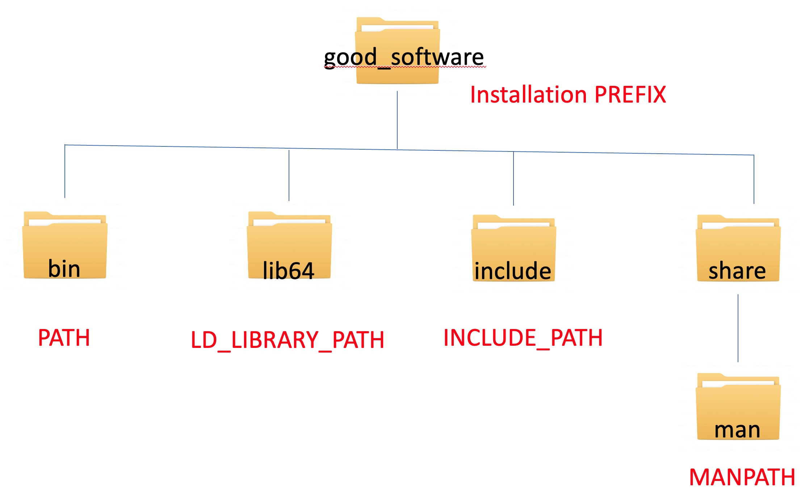

This workshop is a follow up to the Cluster Training Workshop demonstrating tools and tricks for maximizing your utilization of advanced computing resources. The workshop will provide hands-on experience with intermediate Linux commands, Linux environment settings, and bash scripting examples that will make your computational research projects more efficient, more organized, and more enjoyable.
Prerequisite: must have completed the Cluster Training Workshop or have previous experience with the Linux command line and text editing.
[gnowmik@login1 ~]$ cd
[gnowmik@login1 ~]$ pwd
/ihome/kwong/gnowmik
[gnowmik@login1 ~]$
[gnowmik@login1 ~]$ ls
CRC Desktop mocvnhlysm_1N.24C_OMPI_SMP mocvnhlysm_1titanX.1C mocvnhlysm_1v100.1C mocvnhlysm_2GTX1080.2C zzz_cleanmeup
[gnowmik@login1 ~]$
[gnowmik@login1 ~]$ cd mocvnhlysm_1N.24C_OMPI_SMP
[gnowmik@login1 mocvnhlysm_1N.24C_OMPI_SMP]$ pwd
/ihome/kwong/gnowmik/mocvnhlysm_1N.24C_OMPI_SMP
[gnowmik@login1 mocvnhlysm_1N.24C_OMPI_SMP]$ ls
amber.slurm logfile md.in mocvnhlysm.crd mocvnhlysm.mdcrd mocvnhlysm.nfo mocvnhlysm.out mocvnhlysm.rst mocvnhlysm.top slurm-5105649.out
[gnowmik@login1 mocvnhlysm_1N.24C_OMPI_SMP]$
[gnowmik@login1 mocvnhlysm_1N.24C_OMPI_SMP]$ cp amber.slurm amber.slurm-new
[gnowmik@login1 mocvnhlysm_1N.24C_OMPI_SMP]$ ls
amber.slurm logfile mocvnhlysm.crd mocvnhlysm.nfo mocvnhlysm.rst slurm-5105649.out
amber.slurm-new md.in mocvnhlysm.mdcrd mocvnhlysm.out mocvnhlysm.top
[gnowmik@login1 mocvnhlysm_1N.24C_OMPI_SMP]$
[gnowmik@login1 mocvnhlysm_1N.24C_OMPI_SMP]$ mv amber.slurm amber.slurm-old
[gnowmik@login1 mocvnhlysm_1N.24C_OMPI_SMP]$ ls
amber.slurm-new logfile mocvnhlysm.crd mocvnhlysm.nfo mocvnhlysm.rst slurm-5105649.out
amber.slurm-old md.in mocvnhlysm.mdcrd mocvnhlysm.out mocvnhlysm.top
[gnowmik@login1 mocvnhlysm_1N.24C_OMPI_SMP]$
[gnowmik@login1 mocvnhlysm_1N.24C_OMPI_SMP]$ rm amber.slurm-new
[gnowmik@login1 mocvnhlysm_1N.24C_OMPI_SMP]$ ls
amber.slurm-old logfile md.in mocvnhlysm.crd mocvnhlysm.mdcrd mocvnhlysm.nfo mocvnhlysm.out mocvnhlysm.rst mocvnhlysm.top slurm-5105649.out
[gnowmik@login1 mocvnhlysm_1N.24C_OMPI_SMP]$ mv amber.slurm-old amber.slurm
[gnowmik@login1 mocvnhlysm_1N.24C_OMPI_SMP]$ ls
amber.slurm logfile md.in mocvnhlysm.crd mocvnhlysm.mdcrd mocvnhlysm.nfo mocvnhlysm.out mocvnhlysm.rst mocvnhlysm.top slurm-5105649.out
[gnowmik@login1 mocvnhlysm_1N.24C_OMPI_SMP]$
[gnowmik@login1 mocvnhlysm_1N.24C_OMPI_SMP]$ pwd
/ihome/kwong/gnowmik/mocvnhlysm_1N.24C_OMPI_SMP
[gnowmik@login1 mocvnhlysm_1N.24C_OMPI_SMP]$ cd ..
[gnowmik@login1 ~]$ pwd
/ihome/kwong/gnowmik
[gnowmik@login1 ~]$
[gnowmik@login1 ~]$ ls
CRC Desktop mocvnhlysm_1N.24C_OMPI_SMP mocvnhlysm_1titanX.1C mocvnhlysm_1v100.1C mocvnhlysm_2GTX1080.2C zzz_cleanmeup
[gnowmik@login1 ~]$ cp -rp mocvnhlysm_1v100.1C mocvnhlysm_1v100.1C-COPY
[gnowmik@login1 ~]$ ls
CRC Desktop mocvnhlysm_1N.24C_OMPI_SMP mocvnhlysm_1titanX.1C mocvnhlysm_1v100.1C mocvnhlysm_1v100.1C-COPY mocvnhlysm_2GTX1080.2C zzz_cleanmeup
[gnowmik@login1 ~]$
[gnowmik@login1 ~]$ ls
CRC Desktop mocvnhlysm_1N.24C_OMPI_SMP mocvnhlysm_1titanX.1C mocvnhlysm_1v100.1C mocvnhlysm_2GTX1080.2C zzz_cleanmeup
[gnowmik@login1 ~]$ cp -rp mocvnhlysm_1v100.1C mocvnhlysm_1v100.1C-COPY
[gnowmik@login1 ~]$ ls
CRC Desktop mocvnhlysm_1N.24C_OMPI_SMP mocvnhlysm_1titanX.1C mocvnhlysm_1v100.1C mocvnhlysm_1v100.1C-COPY mocvnhlysm_2GTX1080.2C zzz_cleanmeup
[gnowmik@login1 ~]$ rmdir mocvnhlysm_1v100.1C-COPY
rmdir: failed to remove ‘mocvnhlysm_1v100.1C-COPY': Directory not empty
[gnowmik@login1 ~]$ ls mocvnhlysm_1v100.1C-COPY/*
mocvnhlysm_1v100.1C-COPY/amber.slurm mocvnhlysm_1v100.1C-COPY/mocvnhlysm.crd mocvnhlysm_1v100.1C-COPY/mocvnhlysm.out
mocvnhlysm_1v100.1C-COPY/gpus-1.out mocvnhlysm_1v100.1C-COPY/mocvnhlysm.mdcrd mocvnhlysm_1v100.1C-COPY/mocvnhlysm.rst
mocvnhlysm_1v100.1C-COPY/md.in mocvnhlysm_1v100.1C-COPY/mocvnhlysm.nfo mocvnhlysm_1v100.1C-COPY/mocvnhlysm.top
[gnowmik@login1 ~]$ rm mocvnhlysm_1v100.1C-COPY/*
[gnowmik@login1 ~]$ rmdir mocvnhlysm_1v100.1C-COPY
[gnowmik@login1 ~]$
You can only delete empty directories. The star is a wildcard character that signifies everything.
[gnowmik@login1 ~]$ ls
CRC Desktop mocvnhlysm_1N.24C_OMPI_SMP mocvnhlysm_1titanX.1C mocvnhlysm_1v100.1C mocvnhlysm_2GTX1080.2C zzz_cleanmeup
[gnowmik@login1 ~]$ cp -rp mocvnhlysm_1v100.1C mocvnhlysm_1v100.1C-COPY
[gnowmik@login1 ~]$ ls
CRC Desktop mocvnhlysm_1N.24C_OMPI_SMP mocvnhlysm_1titanX.1C mocvnhlysm_1v100.1C mocvnhlysm_1v100.1C-COPY mocvnhlysm_2GTX1080.2C zzz_cleanmeup
[gnowmik@login1 ~]$ rm -rf mocvnhlysm_1v100.1C mocvnhlysm_1v100.1C-COPY
[gnowmik@login1 ~]$ ls
CRC Desktop mocvnhlysm_1N.24C_OMPI_SMP mocvnhlysm_1titanX.1C mocvnhlysm_2GTX1080.2C zzz_cleanmeup
[gnowmik@login1 ~]$
First, we will set up passwordless ssh on the cluster so that we can directly ssh to assigned compute nodes for monitoring or debugging
[gnowmik@login1 ~]$ ssh-keygen -t rsa
Generating public/private rsa key pair.
Enter file in which to save the key (/ihome/kwong/gnowmik/.ssh/id_rsa):
Enter passphrase (empty for no passphrase):
Enter same passphrase again:
Your identification has been saved in /ihome/kwong/gnowmik/.ssh/id_rsa.
Your public key has been saved in /ihome/kwong/gnowmik/.ssh/id_rsa.pub.
The key fingerprint is:
SHA256:WmS8u8NqHi6Z3XgUxlz+Enlzlovi0h2MXqeKMC7UHB8 gnowmik@login1.crc.pitt.edu
The key's randomart image is:
+---[RSA 2048]----+
| |
| . . |
| o+o . . |
| .oE.+ o + |
| o +So * = . |
| . ooo.+ * o |
| . +==.+ = + |
| =o++*o+ o |
| ==ooo.. |
+----[SHA256]-----+
[gnowmik@login1 ~]$ cat .ssh/id_rsa.pub > .ssh/authorized_keys
[gnowmik@login1 ~]$
You can add aliases (also called shortcuts) to your ~/.bashrc file using the following syntax
alias shortcut="canonical Linux command"
For example, I have the following in my ~/.bashrc file
alias src="source $HOME/.bashrc"
alias sinfo='sinfo -M mpi,gpu,smp'
alias jobs="squeue -M mpi,gpu,smp -u $USER"
alias h2p="ssh -X login1.crc.pitt.edu"
If you just added aliases to your ~/.bashrc file, you need to source it before the shortcuts come into existence
source ~/.bashrc
Your ~/.bashrc file is an initialization file that gets automatically sourced when you open a new session on the Linux server.
If you have done any building of software, you might have encountered the phrase add the executable to your PATHs. What exactly does that mean? Linux provides the user the flexibility to install software in any arbitrary directory path called the --prefix. If you choose to install software in a nonstandard PATH, you will need to tell the Linux OS where everything is located. This is what is meant by adding to your PATHs.
The typical PATH definitions and syntax for adding to the PATH are
export PATH=~/good_software/bin:$PATH
export LD_LIBRARY_PATH=~/good_software/lib64:$LD_LIBRARY_PATH
export INCLUDE_PATH=~/good_software/include:$INCLUDE_PATH
export MAN_PATH=~/good_software/share/man:$MAN_PATH

The conventional CRC wisdom for finding software is to
module spider <stuff>
followed by
module spider <specific stuff>
Then you do module load <any dependencies> followed by module load <specific stuff>. Here's an example
<stuff>[gnowmik@login1 ~]$ module spider gcc
----------------------------------------------------------------------------------------------------------------------------------------------------------------------------------------------
gcc:
----------------------------------------------------------------------------------------------------------------------------------------------------------------------------------------------
Description:
The GNU C/C++ Compiler
Versions:
gcc/4.4.0
gcc/4.7.4
gcc/4.8.5
gcc/4.9.4
gcc/5.4.0
gcc/6.3.0
gcc/7.3.0
gcc/8.2.0
gcc/9.2.0
gcc/10.2.0
Other possible modules matches:
petsc-gcc
----------------------------------------------------------------------------------------------------------------------------------------------------------------------------------------------
To find other possible module matches do:
module -r spider '.*gcc.*'
----------------------------------------------------------------------------------------------------------------------------------------------------------------------------------------------
For detailed information about a specific "gcc" module (including how to load the modules) use the module's full name.
For example:
$ module spider gcc/9.2.0
----------------------------------------------------------------------------------------------------------------------------------------------------------------------------------------------
[gnowmik@login1 ~]$
<specific stuff>[gnowmik@login1 ~]$ module spider gcc/8.2.0
----------------------------------------------------------------------------------------------------------------------------------------------------------------------------------------------
gcc: gcc/8.2.0
----------------------------------------------------------------------------------------------------------------------------------------------------------------------------------------------
Description:
The GNU C/C++ Compiler
Other possible modules matches:
petsc-gcc
This module can be loaded directly: module load gcc/8.2.0
----------------------------------------------------------------------------------------------------------------------------------------------------------------------------------------------
To find other possible module matches do:
module -r spider '.*gcc/8.2.0.*'
[gnowmik@login1 ~]$
The Environment Modules work well on CRC but what exactly is lmod doing? To get an idea of what instructions lmod is executing, you can use module show <stuff>
[gnowmik@login1 ~]$ module show gcc/8.2.0
----------------------------------------------------------------------------------------------------------------------------------------------------------------------------------------------
/ihome/crc/modules/Core/gcc/8.2.0.lua:
----------------------------------------------------------------------------------------------------------------------------------------------------------------------------------------------
prepend_path("MODULEPATH","/ihome/crc/modules/Compiler/gcc/8.2.0")
whatis("Name: gcc")
whatis("Version: 8.2.0")
whatis("Description: The GNU C/C++ Compiler")
whatis("Keywords: GNU Compiler Suite")
whatis("URL:")
whatis("-> gcc: https://gcc.gnu.org/onlinedocs/gcc-8.2.0/gcc")
whatis("-> g++: https://gcc.gnu.org/onlinedocs/gcc-8.2.0/libstdc++/manual")
whatis("-> gfortran: https://gcc.gnu.org/onlinedocs/gcc-8.2.0/gfortran")
prepend_path("GCC_ROOT","/ihome/crc/install/gcc/8.2.0")
prepend_path("PATH","/ihome/crc/install/gcc/8.2.0/bin")
prepend_path("CPATH","/ihome/crc/install/gcc/8.2.0/include")
prepend_path("INCLUDE_PATH","/ihome/crc/install/gcc/8.2.0/include")
prepend_path("LIBRARY_PATH","/ihome/crc/install/gcc/8.2.0/lib64")
prepend_path("LD_LIBRARY_PATH","/ihome/crc/install/gcc/8.2.0/lib64")
prepend_path("LD_RUN_PATH","/ihome/crc/install/gcc/8.2.0/lib64")
prepend_path("MANPATH","/ihome/crc/install/gcc/8.2.0/share/man")
prepend_path("LIBPATH","/ihome/crc/install/gcc/8.2.0/lib/gcc/x86_64-pc-linux-gnu/8.2.0")
prepend_path("LIBRARY_PATH","/ihome/crc/install/gcc/8.2.0/lib/gcc/x86_64-pc-linux-gnu/8.2.0")
prepend_path("LD_LIBRARY_PATH","/ihome/crc/install/gcc/8.2.0/lib/gcc/x86_64-pc-linux-gnu/8.2.0")
[gnowmik@login1 ~]$
Notice that lmod has variables defined for PATH, LD_LIBRARY_PATH, INCLUDE_PATH, and MAN_PATH. These are the same environment variables we discussed earlier in the How to set up PATHs section. What is happening is that the lmod configuration file for the gcc/8.2.0 package prepending the installation PREFIX directory to the PATHs. lmod is essentially updating the PATH environment variable by executing
export PATH=/ihome/crc/install/gcc/8.2.0/bin:$PATH
Conclusion: lmod is a simple-to-use utility for modifying PATHs. When you unload a pacakge wth
module unload gcc/8.2.0.
lmod returns the environment variables back to the state before the module load gcc/8.2.0 command.
module purge
module load gcc/5.4.0
module load openmpi/3.0.0
gccmpicc, mpicxx, mpif90mpicc hello_world.c –o hello_world.x
module purge
module load intel/2017.3.196
iccmpiicc, mpiicxx, mpiifortmpiicc hello_world.c –o hello_world.x
Some package build systems conform to convention and can autodetect compilers and optimization flags based on environment settings.
#Some influential environment variables: # CC C compiler command # CFLAGS C compiler flags # LDFLAGS linker flags, e.g. -L<lib dir> if you have libraries in a # nonstandard directory <lib dir> # LIBS libraries to pass to the linker, e.g. -l<library> # CPPFLAGS (Objective) C/C++ preprocessor flags, e.g. -I<include dir> if # you have headers in a nonstandard directory <include dir> # CPP C preprocessor # CXX C++ compiler command # CXXFLAGS C++ compiler flags # CXXCPP C++ preprocessor # CCAS assembler compiler command (defaults to CC) # CCASFLAGS assembler compiler flags (defaults to CFLAGS) # FC Fortran compiler command # FCFLAGS Fortran compiler flags
You use the standard syntax for setting environment variables, such as
export CC=icc
export CFLAGS= -O3 -Xhost
The best way to learn how to build packages is to look at some examples. CRC builds packages under /ihome/crc/build. We might already have a build script for your packae of interest.
[gnowmik@login1 ~]$ ls /ihome/crc/build
abaqus comsol g09 ipc macs nodejs power9 sprng
abinit cp2k gamess itk magma nvidia-hpc-sdk proj sra-toolkit
adf cuba gaussian jaaba make nv_peer_memory prospector stack
afni cuda gcc jansson materials_studio nvshmem protobuf stata
amber cudnn gcmcore java mathematica octave psi4 stringtie
amd curl gdma jdftx matio openbabel pymultinest subread
ansys cutorch gdrcopy jmol matlab openblas pymvpa suitesparse
ansysem cweb geos jsilverstein matlab-mcr opencl python tensorflow
ants damask gibbon julia matpower opencv python-fsps tensorflow-1.3
armadillo dcm2niix git kaldi maven openfoam python-hostlist texlive
arpack deeplabcut githubcli kallisto medea openmm qat3d tinker
ARPACK deeptools glew kentutils mesa openmolcas qchem tmux
ase deviceQuery glib kpp metis openmpi qt tokyo
autodock_vina doxygen glibc lammps mgltools orca quantumespresso torch
bagpipes dynare gmsh lapack mlnx_ofed osss-ucx r trilinos
basemap eigen go latex molden osu-micro-benchmarks rdkit turbomole
bash elpa googletest lcov molecularGSM p4vasp regina ucx
bats expat gpaw leap molpro packmol rsem valgrind
bazel fastqc gperf libdb mongodb parallel rstudio-server vasp
bcftools fastx grace libevent mopac paraview s4 vcftools
bedtools fastx-toolkit graphviz libfabric mosek parmetis sage vim
berkeleygw fdtd gromacs libfaketime mpich3 parsplice samtools virtuoso
bison febio gsl libgtextutils mricrogl pcre sas virtuoso-opensource
blas ffmpeg GSM libjpeg mrtrix3 pcre2 scala visit
blender fftw gsmnew libpng multinest pdftools schrodinger vlsi
boost fhi-aims gtk libtiff mumax pedcheck scons vmd
bowtie2 fish gulp libxc mvapich perl sdv vscode
bzip2 flex gurobi libxml2 namd petsc sedpy vtk
cadence fontconfig hdf5 libxsmm nano pgi shcoll westpa
cadical fpga hisat2 libzmq nauty plotjuggler siesta wine
caffe fqtrim homer lightGBM nccl plumed singularity xfce
cantera freefem hpl list_of_packages.txt nektar++ pmix slurm xilinx
cfitsio freesurfer hypre lmod neovim poltype sox xtb
charm++ fsl imagemagick lua netcdf poppler spark xz
clang fsleyes intel luarocks netpbm popt sparrow zlib
cmake fusioncatcher intelopa-basic lumerical neuron povray spm
First you load R and start an interactive session. You can use the same commands as you do on your own laptop to install R libraries, namely through the standard install.packages( ) syntax. The packages will automatically be installed under your $HOME.
[gnowmik@login0 ~]$ module load gcc/8.2.0
[gnowmik@login0 ~]$ module load r/3.5.2
[gnowmik@login0 ~]$ R
R version 3.5.2 (2018-12-20) -- "Eggshell Igloo"
Copyright (C) 2018 The R Foundation for Statistical Computing
Platform: x86_64-pc-linux-gnu (64-bit)
R is free software and comes with ABSOLUTELY NO WARRANTY.
You are welcome to redistribute it under certain conditions.
Type 'license()' or 'licence()' for distribution details.
Natural language support but running in an English locale
R is a collaborative project with many contributors.
Type 'contributors()' for more information and
'citation()' on how to cite R or R packages in publications.
Type 'demo()' for some demos, 'help()' for on-line help, or
'help.start()' for an HTML browser interface to help.
Type 'q()' to quit R.
[Previously saved workspace restored]
> library(stats)
> library(EpiModel)
Error in library(EpiModel) : there is no package called ‘EpiModel'
> install.packages("EpiModel", dependencies = TRUE)
Warning in install.packages("EpiModel", dependencies = TRUE) :
'lib = "/ihome/crc/install/gcc-8.2.0/r/3.5.2/lib64/R/library"' is not writable
Would you like to use a personal library instead? (yes/No/cancel) yes
Would you like to create a personal library
‘~/R/x86_64-pc-linux-gnu-library/3.5'
to install packages into? (yes/No/cancel) yes
--- Please select a CRAN mirror for use in this session ---
Secure CRAN mirrors
1: 0-Cloud [https] 2: Algeria [https]
3: Australia (Canberra) [https] 4: Australia (Melbourne 1) [https]
[gnowmik@login1 ~]$ module purge
[gnowmik@login1 ~]$ module load python/anaconda3.6-5.2.0
[gnowmik@login1 ~]$ which python
/ihome/crc/install/python/anaconda3.6-5.2.0/bin/python
[gnowmik@login1 ~]$ conda create -n mypython python=3.6
Collecting package metadata: done
Solving environment: done
...
## Package Plan ##
environment location: /ihome/kwong/gnowmik/.conda/envs/mypython
added / updated specs:
- python=3.6
The following NEW packages will be INSTALLED:
ca-certificates pkgs/main/linux-64::ca-certificates-2019.1.23-0
certifi pkgs/main/linux-64::certifi-2018.11.29-py36_0
libedit pkgs/main/linux-64::libedit-3.1.20181209-hc058e9b_0
...
openssl pkgs/main/linux-64::openssl-1.1.1a-h7b6447c_0
xz pkgs/main/linux-64::xz-5.2.4-h14c3975_4
zlib pkgs/main/linux-64::zlib-1.2.11-h7b6447c_3
Proceed ([y]/n)? y
Preparing transaction: done
Verifying transaction: done
Executing transaction: done
#
# To activate this environment, use
#
# $ conda activate mypython
#
# To deactivate an active environment, use
#
# $ conda deactivate
[gnowmik@login1 ~]$ conda activate mypython
(mypython) [gnowmik@login1 ~]$ which python
~/.conda/envs/mypython/bin/python
(mypython) [gnowmik@login1 ~]$ conda list
# packages in environment at /ihome/kwong/gnowmik/.conda/envs/mypython:
#
# Name Version Build Channel
ca-certificates 2019.1.23 0
certifi 2018.11.29 py36_0
libedit 3.1.20181209 hc058e9b_0
libffi 3.2.1 hd88cf55_4
libgcc-ng 8.2.0 hdf63c60_1
libstdcxx-ng 8.2.0 hdf63c60_1
ncurses 6.1 he6710b0_1
openssl 1.1.1a h7b6447c_0
pip 19.0.1 py36_0
(mypython) [gnowmik@login1 ~]$ conda install numpy
Collecting package metadata: done
Solving environment: done
## Package Plan ##
environment location: /ihome/kwong/gnowmik/.conda/envs/mypython
added / updated specs:
- numpy
The following NEW packages will be INSTALLED:
blas pkgs/main/linux-64::blas-1.0-mkl
intel-openmp pkgs/main/linux-64::intel-openmp-2019.1-144
libgfortran-ng pkgs/main/linux-64::libgfortran-ng-7.3.0-hdf63c60_0
mkl pkgs/main/linux-64::mkl-2019.1-144
mkl_fft pkgs/main/linux-64::mkl_fft-1.0.10-py36ha843d7b_0
mkl_random pkgs/main/linux-64::mkl_random-1.0.2-py36hd81dba3_0
numpy pkgs/main/linux-64::numpy-1.15.4-py36h7e9f1db_0
numpy-base pkgs/main/linux-64::numpy-base-1.15.4-py36hde5b4d6_0
Proceed ([y]/n)?
Preparing transaction: done
Verifying transaction: done
Executing transaction: done
(mypython) [gnowmik@login1 ~]$ conda list
# packages in environment at /ihome/kwong/gnowmik/.conda/envs/mypython:
#
# Name Version Build Channel
blas 1.0 mkl
ca-certificates 2019.1.23 0
certifi 2018.11.29 py36_0
intel-openmp 2019.1 144
libedit 3.1.20181209 hc058e9b_0
libffi 3.2.1 hd88cf55_4
libgcc-ng 8.2.0 hdf63c60_1
libgfortran-ng 7.3.0 hdf63c60_0
libstdcxx-ng 8.2.0 hdf63c60_1
mkl 2019.1 144
mkl_fft 1.0.10 py36ha843d7b_0
mkl_random 1.0.2 py36hd81dba3_0
ncurses 6.1 he6710b0_1
numpy 1.15.4 py36h7e9f1db_0
numpy-base 1.15.4 py36hde5b4d6_0
openssl 1.1.1a h7b6447c_0
pip 19.0.1 py36_0
python 3.6.8 h0371630_0
readline 7.0 h7b6447c_5
setuptools 40.8.0 py36_0
sqlite 3.26.0 h7b6447c_0
tk 8.6.8 hbc83047_0
wheel 0.32.3 py36_0
xz 5.2.4 h14c3975_4
zlib 1.2.11 h7b6447c_3
(mypython) [gnowmik@login1 ~]$ conda deactivate
[gnowmik@login1 ~]$
bash[gnowmik@login1 ~]$ for i in `seq 1 2 10`; do echo $i; done
1
3
5
7
9
An example where I use the bash for loop in my research
#!/bin/bash
HERE=`pwd`
ZZZ=( \
HOAG_0.00_2016-SHIELD.DECOL-LESLIE_CRE-fLTAC_CP-ALLH \
HOAG_0.00_2016-SHIELD.DECOL-LESLIE_CRE_ALL-HOSP-fLTAC_CP-ALLH \
HOAG_0.00_2016-SHIELD.DECOL-LESLIE_CRE_HOSP-ONLY-fLTAC_CP-ALLH \
HOAG_0.00_2016-SHIELD.DECOL-LESLIE_CRE_NH-ONLY-fLTAC_CP-ALLH \
)
FILES1=( SHIELD-CP_days_traj_HOSP.xls \
SHIELD-CP_days_traj_NH.xls \
SHIELD-CP_days_traj_ICU.xls \
SHIELD-CP_days_traj_COUNTY-AVRG.xls )
BASE_DIR=ZZZ_FOR_SARAH-2
mkdir -p $HERE/ZZZ_SUMMARY.CP-Days
cd $HERE/ZZZ_SUMMARY.CP-Days
for z in "${ZZZ[@]}"
do
for x in "${FILES1[@]}"
do
ln -sf $HERE/d$z/$BASE_DIR/v$x $z"_"v$x
done
done
#!/bin/bash
COUNTER=0
while [ $COUNTER -lt 10 ]; do
echo The counter is $COUNTER
COUNTER=$(($COUNTER+1))
done
An example from my own research
#!/bin/bash
HOSP=( AGEN AMMC CHAP CHOC CMIS COAS COLL FVRH GGMC HBHO \
WMCA WMCS )
MEND=$(echo "scale=0;( $EPREV - $BPREV ) / $PREV_STEP" | bc)
N=0
NEND=${#HOSP[@]}
while [ $N -lt $NEND ]; do
PPREV=$(echo "scale=2; $BPREV - $PREV_STEP " | bc | awk '{printf "%.2f", $0}')
M=0
while [ $M -le $MEND ]; do
PREV=$(echo "scale=2; $PPREV + $PREV_STEP " | bc | awk '{printf "%.2f", $0}')
sed -e "s/HOSP_NAME/${HOSP[$N]}/g" $INP_TMPL > $INP_TMPL.${HOSP[$N]}
sed -e "s/PREV_VAL/$PREV/g" $INP_TMPL.${HOSP[$N]} > $INP_TMPL.${HOSP[$N]}_$PREV
mkdir -p $RESULTS/${HOSP[$N]}_$PREV$TAG"_SET-"$k
cd $RESULTS/${HOSP[$N]}_$PREV$TAG"_SET-"$k
mv ../../$INP_TMPL.${HOSP[$N]}_$PREV MRSA.INPUT
cp ../../$TALI_ICU .
cp ../../../../build_$BUILD_TYPE/$EXE .
mpirun -n $SLURM_NTASKS ./$EXE >& mrsa.log_mpi
cd $WORKDIR/$RESULTS/${HOSP[$N]}_$PREV$TAG"_SET-"$k
cd ../../
M=$(( $M + 1 ))
PPREV=$PREV
done
N=$(( $N + 1 ))
done
In the above script, what exactly is the following line doing?
sed -e "s/HOSP_NAME/${HOSP[$N]}/g" $INP_TMPL > $INP_TMPL.${HOSP[$N]}
sed is a stream editor for filtering and transforming text. The above line searches for a string and replaces it with another string. This command is useful for creating a generic input template and creating specific inputs files from that. Here is a better usage of sed, which performs the search/replace inplace instead of creating temporary files
sed -i'' s/replace_text/with_this/g input_template.txt
M=0
while [ $M -le $MEND ]; do
...
M=$(( $M + 1 ))
done
HOSP=( AGEN AMMC CHAP CHOC CMIS COAS COLL FVRH GGMC HBHO \
WMCA WMCS )
N=0
${#HOSP[@]}?NEND=${#HOSP[@]}
${ZZZ[@]}?for z in "${ZZZ[@]}"
do
...
done
We have encounter the bash for loop construct before. This syntax refers to the array elements within the variable HOSP.
-lt (<) : less than
-gt (>) : greater than
-le (<=) : less than or equal to
-ge (>=) : greater than or equal to
-eq (==) : equal to
-ne (!=) : not equal to
+ : add
- : subtract
* : multiply
/ : divide
% : remainder
#!/bin/bash
if [ "bar" = "bar" ]; then
echo bar is bar
fi
#!/bin/bash
if [ "foo" = "bar" ]; then
echo foo equals to bar
else
echo foo is not equal to bar
fi
#!/bin/bash
# This script will test if we're in a leap year or not.
year=`date +%Y`
if [ $[$year % 400] -eq "0" ]; then
echo "This is a leap year. February has 29 days."
elif [ $[$year % 4] -eq 0 ]; then
if [ $[$year % 100] -ne 0 ]; then
echo "This is a leap year, February has 29 days."
else
echo "This is not a leap year. February has 28 days."
fi
else
echo "This is not a leap year. February has 28 days."
fi
https://crc.pitt.edu/resources/h2p-user-guide